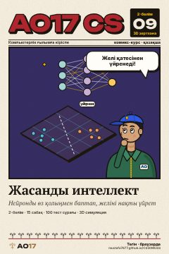

AO17 CS курсы / 2-бөлім: 3D зертхана / Жасанды интеллект

Жасанды интеллект · 15-сабақ · ≈20 мин · 2 қадам · 4 сұрақ
Калибрлеу: «95% сенімді» шынымен 95% па?
Calibration: Is 95% Sure Really 95%?
Модель «99% сенімдімін» дейді, бірақ ондай жағдайлардың 86%-ында ғана дұрыс. Сенімділік диаграммасы, ECE және температуралық масштабтау.
1Тым сенімді модель
Идея
Модель екі нәрсе береді: жауап (иә не жоқ) және сенім (мысалы, 0,99). Дәлдік тек жауапты бағалайды. Ал сенімнің өзі де дұрыс болуы керек: модель «90%» деген барлық жағдайдың 90%-ында дұрыс болса, ол калибрленген.
Тексеру тәсілі: сенімділік диаграммасы. Мысалдарды модельдің сенімі бойынша топтарға бөлеміз (50-60%, 60-70%, ..., 90-100%) және әр топтың шын дәлдігін есептейміз. Мінсіз модельде бағандар диагональда тұрады.
ECE (expected calibration error): айтылған сенім мен шын дәлдіктің айырмасының салмақты орташасы.
Түйсік
Ауа райын болжаушы «жаңбыр 90%» дейді. Ол осылай айтқан 100 күннің 90-ында жаңбыр жауса, оған сенуге болады. 60-ында ғана жауса, оның «90%»-ы бос сөз, тіпті «жаңбыр бола ма» деген болжамы жиі дұрыс болса да.
Есептеп көрейік
Біздің модельдің логиттері шын мәнінен 3 есе үлкен.
- Дәлдік: 79%.
- 90-100% тобы: орташа айтқан сенімі 99%, шын дәлдігі 86%.
- ECE = 0,128.
Нақты әлемде
Калибровка шешім сенімге тәуелді болғанда маңызды: дәрігерге «бұл ісік 99% қатерлі» деу мен «70%» деудің салдары әртүрлі. Өздігінен жүретін көлік, несие беру, тіпті ChatGPT сияқты модельдер «білмеймін» деуі керек сәтті осы сенімге қарап анықтайды.
Енді сен
Шикі модельді тексеріп, ең жоғарғы топтағы айырманы тап. Сосын T = 2 таңда: дәлдік өзгере ме?
3D симуляцияда орында
- Шикі модельді тексер: ECE 0.1-ден жоғары
- T = 2: ECE азаяды, ал дәлдік сол 79%
Алдымен болжа
Классификатор ұзақ үйретілді. Ол «99% сенімдімін» деген жағдайлардың шынында қаншасында дұрыс?
Жауабы мен түсіндірмесі
Дұрыс жауап: Айтарлықтай аз, мысалы 86%-ында
Нейрондық желілер ұзақ үйретілгенде логиттерін тым үлкейтеді: жауаптары өзгермейді, ал сенімі шындықтан асып кетеді.
Өзіңді тексер
Модель калибрленген деген не?
Жауабы мен түсіндірмесі
Дұрыс жауап: Ол p сенімімен айтқан жағдайлардың шамамен p үлесінде дұрыс
Калибровка дәлдік емес: дәлдігі төмен модель де калибрленген бола алады, егер ол өз шамасын білсе.
Неге температура дәлдікті өзгертпейді?
Жауабы мен түсіндірмесі
Дұрыс жауап: Логитті оң санға бөлу оның таңбасын өзгертпейді, сондықтан жауап сол қалады
Жауап логиттің таңбасына (p ≥ 0,5) байланысты. T тек сенімнің «күшін» өзгертеді.
2Температура
Идея
Температуралық масштабтау (temperature scaling): модельдің логиттерін бір санға бөлу, p = σ(logit / T).
- T > 1: сенім төмендейді (модель «жұмсарады»).
- T < 1: сенім күшейеді.
T үйретуден кейін бөлек тексеру жиынында таңдалады: ECE ең аз болатын мән. Модельдің өзі қайта үйретілмейді, бір ғана сан қосылады.
Түйсік
Үнемі «мен әрине дұрыспын» дейтін досың бар. Оның сөзін тыңдағанда сен оның сенімін ішіңнен үшке бөліп аласың. Ол әлі де жиі дұрыс, бірақ енді оның сеніміне қаншалықты сүйену керегін білесің.
Есептеп көрейік
- T = 1: ECE 0,128 (тым сенімді).
- T = 2: ECE 0,055.
- T = 3: ECE 0,011 (ең жақсы).
- T = 4: ECE 0,056 (тым сақ: 90% дегенде 98% дұрыс).
Дәлдік әр жағдайда 79%.
Нақты әлемде
2017 жылы Гуо мен әріптестері заманауи терең желілердің ескі, кішірек желілерден нашар калибрленетінін көрсетті және температуралық масштабтауды қарапайым әрі тиімді түзету ретінде ұсынды. Бұл бүгін де кең қолданылады.
⚠ Калибровка деректер өзгергенде бұзылады (13-сабақтағы ығысуды еске ал): жаңа деректерде T-ны қайта тексеру керек.
Енді сен
T = 3 және T = 4-ті тексер. Қайсысында бағандар диагональға ең жақын?
3D симуляцияда орында
- ECE 0.02-ден аз болатын температураны тап
- Температураны одан әрі көтер: модель тым сақ болып, ECE қайта өседі
Алдымен болжа
Логиттер 3 есе тым үлкен екені белгілі. Қандай температура ең жақсы калибровка береді?
Жауабы мен түсіндірмесі
Дұрыс жауап: T = 3
Логитті 3-ке бөлсек, ол шын мәніне оралады. Одан үлкен T модельді тым сақ етеді.
Өз сөзіңмен түсіндір
Температура дәлдікті өзгертпей, калибровканы қалай түзетті? Неге T = 4 қайтадан нашарлады?
Жақсы түсіндірмеде болатын ойлар
- логиттер тым үлкен, сондықтан сенім асқақ
- бөлу таңбаны өзгертпейді: жауап сол
- T = 4 модельді тым сақ етеді
Өзіңді тексер
T-ны қай деректерде таңдау керек?
Жауабы мен түсіндірмесі
Дұрыс жауап: Үйретуге қатыспаған бөлек тексеру жиынында
Үйрету деректерінде модель онсыз да тым сенімді. Тест жиынын таңдауға қолдансаң, ол енді әділ бағалау бола алмайды.
T тым үлкен болса не болады?
Жауабы мен түсіндірмесі
Дұрыс жауап: Модель тым сақ болады: айтқан сенімі шын дәлдігінен төмен
Калибровка екі жаққа да бұзылады: асқақ сенім де, жасқаншақтық та қате.
Сабақ AO17 командасының INSIDE TECH 3D платформасынан алынған: дәріс, тест және 3D симуляция - бір сабақтың бөліктері. Симуляция осы сайттың ішінде ашылады, прогресі «Менің шаңырағым» бетіне қосылады.